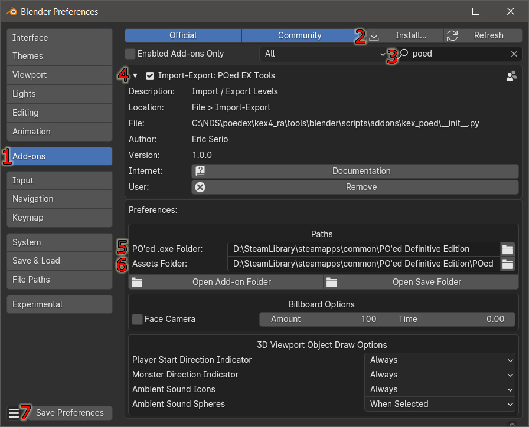

Open Blender and navigate to Edit > Preferences
- Click on the Add-ons tab.
- Click the Install... button and select the POedEXBlenderTools.zip file you downloaded.
- If you don't see the Add-on afterwards type in the search field “poed” to quickly find the add-on Import-Export: POed EX Tools.
- Enable the add-on by clicking the checkbox and expand the field to see that there are 2 folder paths you must set before using this add-on.
- The PO'ed .exe Folder field must be assigned to the PO'ed Definitive Edition install folder
- The Assets Folder field must be assigned to the folder where you extracted the contents of the POed.kpf file. If you haven't done that yet then do that now.
- Click the Save Preferences button
|

|